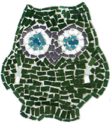
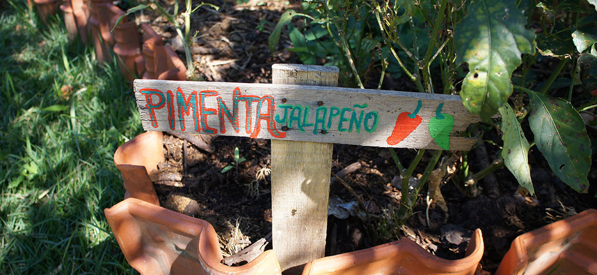
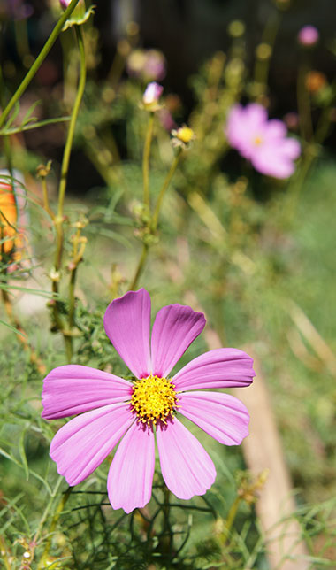
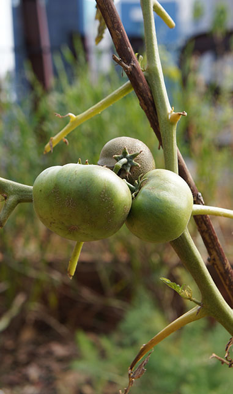

Hortas comunitárias urbanas

Primeira horta comunitária da cidade de São Paulo em praça pública.
“A agricultura urbana é uma solução prática, simples e prazerosa.” Claudia Visoni – idealizadora






“Aqui é um ponto criativo de troca de novas experiências, uma reunião de cultura e conhecimento.”
Elaine Tucci Lippelt - Paisagista



“Aqui é um espaço inspirador para outras ações parecidas. É um grande laboratório de transformação.”
Andrea Pesek – arquiteta

Horta do Centro Cultural São Paulo
Cultivo colaborativo desde 2011

